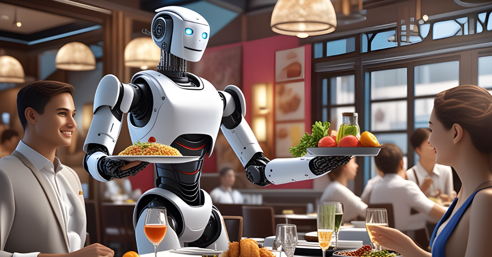
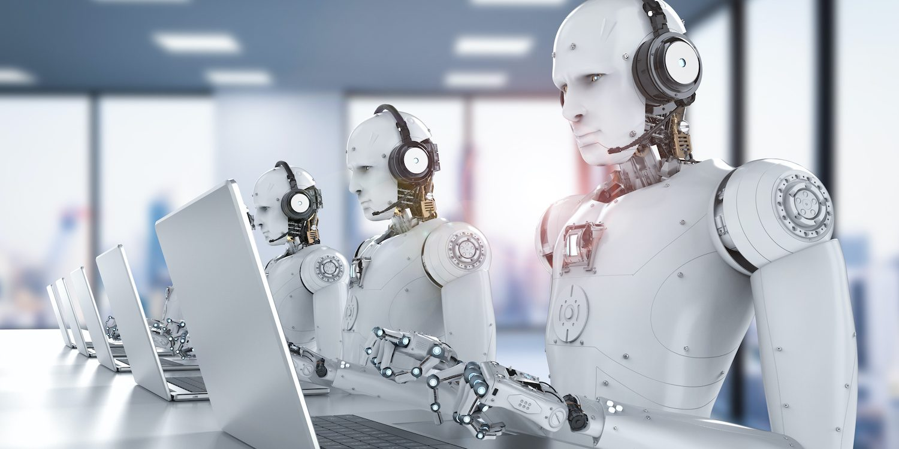
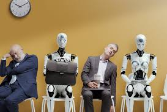

- 
-
.jpg)
-
.jpg)
- Analista de datos. Es uno de los perfiles más demandados por las organizaciones, puesto que la interpretación de los datos es crucial para establecer estrategias de negocio.
- Especialista en blockchain. También conocido como experto en seguridad de criptomonedas, es el encargado de gestionar el riesgo en la red blockchain. Para ello, utiliza ciberseguridad, servicios de garantía y aplica las mejores técnicas para eliminar los fraudes.
- Ingeniero Cloud. Es un profesional de las TIC que se ocupa de crear, mantener y solucionar los problemas de la infraestructura de la nube.
- Especialista en IA. Este profesional tiene conocimientos sobre la ciencia de datos, aprendizaje automatizo y profundo. Su principal función es crear aplicaciones y herramientas con esta tecnología para mejorar los beneficios de las organizaciones.
-
Automatización de tareas repetitivas
Puedes identificar actividades rutinarias en el flujo de trabajo y utilizar la IA para automatizarlas. Esto incluye la clasificación de correos electrónicos, la generación de informes o la gestión de datos. Verás cómo afecta la inteligencia artificial en el trabajo para ahorrar tiempo.
-
asistencia al cliente mejorada
La IA puede responder a preguntas frecuentes y resolver problemas comunes de manera eficiente. Además, con la implementación de chatbots y sistemas de respuesta automática podrás brindar atención al cliente las 24 horas del día.
-
Análisis de datos avanzados
La IA analiza grandes conjuntos de datos y extrae información valiosa en tiempo récord. Esto ayuda en la toma de decisiones estratégicas y en la identificación de tendencias y patrones, por ejemplo, en el comportamiento de compra de los clientes.
-
Contenido personalizado
Los algoritmos de IA mejoran la experiencia del usuario, entre otros, al mostrar productos o servicios relacionados con su historial de compra. Esta es otra de las formas esenciales como afecta la inteligencia artificial en el trabajo.
En efecto, el 77% de los líderes empresariales reconoce que una mayor personalización produce una mayor retención de los clientes (y el 66% cree que reduce los costos de adquisición).
- Schwab, Klaus (2016): The Fourth Industrial Revolution, World Economic Forum. Disponible en [Ed. esp. (2016): La cuarta revolución industrial, Barcelona, Debate].
- «State of AI in the Enterprise», 2ª ed., Deloitte Insights, informe, 2018. Disponible en.
- «Global Artificial Intelligence Study: Exploiting the AI Revolution», PricewaterhouseCoopers, 2017. Disponible en.
- «Robotic Process Automation: Statistics, Business Impact and Future», SDET. Disponible en.
- Holt-Lunstad, Julianne; Smith, Timothy B. y Layton, J. Bradley (2010): «Social Relationships and Mortality Risk: A Meta-Analytic Review», PLOS Medicine, 27 de julio de 2010. Disponible en.
- «What Will Be the Net Impact of AI and Related Technologies on Jobs in China?», PricewaterhouseCoopers, 2018. Disponible en.
- «Artificial Intelligence: Implications for China», McKinsey Global Institute, abril de 2017. Disponible en.
Como ocurre con todas las grandes transformaciones tecnológicas, el revuelo que suscita la inteligencia artificial (IA) ha llegado mucho antes que su aplicación generalizada al mundo real. El presente artículo indaga en los cambios fundamentales que el mundo entero deberá superar en la próxima década para desarrollar verdaderamente el potencial de la IA y mejorar la vida laboral y la productividad. También atribuye sin ambages la responsabilidad del desarrollo de la IA a los sectores «tradicionales»: los cambios radicales no vendrán únicamente del sector tecnológico, sino de las pertinentes y sistemáticas innovaciones que, a ese respecto, introduzcan empresas consolidadas. Aunque se centra en las repercusiones globales de la IA, también ofrece una perspectiva china sobre los retos y las oportunidades de su adopción a gran escala.
La inteligencia artificial (IA) es la capacidad que tienen las máquinas para simular el comportamiento humano. Esto incluye actividades como el aprendizaje, la percepción, el razonamiento y la toma de decisiones.
La IA se basa en algoritmos y modelos matemáticos que permiten a las máquinas procesar grandes cantidades de datos y aprender de ellos para mejorar su rendimiento en diferentes tareas.
En la actualidad, la IA se utiliza en una amplia variedad de campos, incluyendo la medicina, la ingeniería, la educación, el comercio electrónico y muchos más.
El desarrollo de la IA plantea tanto oportunidades como riesgos para el empleo. Por un lado, puede automatizar tareas repetitivas y mejorar la eficiencia en muchas industrias. Por otro lado, también puede suponer una amenaza para ciertos puestos de trabajo, especialmente aquellos que son fácilmente automatizables.
En resumen, la IA es una tecnología en constante evolución que tiene el potencial de transformar nuestra sociedad de muchas maneras diferentes.
Al igual que ha ocurrido con la incursión de otras tecnologías en el pasado, algunos trabajadores del siglo XXI se enfrentan a ser sustituidos por la IA. Según un informe del Foro Económico Mundial en 2022, 75 millones de obreros van a perder sus puestos de trabajo. Los principales afectados van a ser aquellos que se ocupan de tareas repetitivas y rutinarias.
Según el último estudio de la empresa tecnológica OpenAI, creadora de ChatGPT, los siguientes puestos de trabajo están más expuestos a desaparecer: matemáticos, asesores financieros, escritores e informáticos.
Según el Foro Económico Mundial en los próximos años se van a crear 58 millones de nuevos empleos. Para optar a estos nuevos empleos los trabajadores deben tener habilidades digitales, como la programación, atender a los aspectos socioeconómicos del entorno y adquirir un aprendizaje permanente. Estos son algunos de los perfiles digitales con una gran proyección laboral:
El potencial de cambio que la IA plantea a nuestra forma de vivir y trabajar es tan enorme que sus usos actuales no suponen más que un arañazo en la superficie de lo que está por venir. Afectará a todos los aspectos de nuestra vida y el cambio influirá hasta en los confines del mundo que habitamos. Sin embargo, ¿afectará a todos de la misma manera?
Las investigaciones indican que la IA permitirá la creación de una riqueza nunca vista: PricewaterhouseCoopers (PwC) calcula que su adopción generalizada aumentará en alrededor de 15,7 billones de dólares el PIB mundial en 2030, 3 es decir, en poco más de diez años. Este aumento continuará su trayectoria exponencial hasta 2050.
La incorporación de la IA puede generar enormes beneficios empresariales, pero la creación de riqueza no será uniforme. Como he indicado en mi libro AI Superpowers: China, Silicon Valley, and the New World Order [Las superpotencias de la IA: China, Silicon Valley y el nuevo orden mundial], las ganancias generadas por las primeras innovaciones en el sector de la IA presentan un escenario prácticamente monopolístico, puesto que dos colosos económicos –Estados Unidos y China– ya están sentando la pauta al albergar a todos los grandes gigantes corporativos del sector. Según los pronósticos de PwC ya mencionados, se cree que el crecimiento más relevante se producirá en China, en gran medida por su enorme población, que representa casi un quinto del total mundial.
LA PENETRACIÓN DE LA IA

El principal potencial de la IA radica en la penetración en las empresas actuales a través de nuevas formas de solucionar los problemas, nuevos niveles de velocidad y precisión, una renovada eficacia y nuevas formas de trabajar y de ponderar lo que se puede hacer. La IA se puede utilizar para optimizar procesos existentes (como ahorrar hasta el 80% en el coste de la externalización de servicios auxiliares o al cliente), para mejorar procedimientos (reformulando, por ejemplo, los pronósticos de ventas, la logística y la cadena de suministro) o para trastocar ciertos sectores (utilizando, por ejemplo, la IA para contribuir a que la creación de nuevos medicamentos sea mucho más rápida que en la actualidad).

AMujeres, hispanos y negros tienen más riesgo de reemplazo del empleo por una IA, según un estudio de McKinsey de julio de 2023. Las mujeres se llevan la peor parte: tienen 1,5 veces más probabilidades de necesitar cambiar de ocupación que los hombres. Esto es así porque suelen ser mayoría en los puestos de asistente de oficina y atención al cliente, para los que el informe prevé una reducción en unos 3,7 millones y 2,0 millones de empleos, respectivamente, de aquí a 2030. Las mujeres se encuentran infrarrepresentadas en los puestos de mayor crecimiento y remuneraciones más altas, por lo que el informe recomienda quitarles barreras para el empleo y promover guarderías y cuidado de niños.
1. Pérdida de empleo: La automatización impulsada por la IA puede llevar a la pérdida de empleos en ciertas industrias, especialmente aquellos que implican tareas repetitivas y rutinarias.
2. Sesgo algorítmico: Los algoritmos de IA pueden estar sesgados debido a los datos utilizados para entrenarlos, lo que puede llevar a decisiones discriminatorias o injustas.
3. Privacidad y seguridad: La recopilación y el análisis de grandes cantidades de datos por parte de los sistemas de IA plantean preocupaciones sobre la privacidad y la seguridad de la información personal.
4. Dependencia tecnológica: La creciente dependencia de la IA puede hacer que las sociedades sean más vulnerables a fallos técnicos y ciberataques.
En resumen, la inteligencia artificial presenta una serie de riesgos que deben abordarse de manera cuidadosa y responsable para maximizar sus beneficios y minimizar sus impactos negativos.
En esta nueva revolución tecnológica, las economías avanzadas y los trabajadores cualificados tienen un mayor riesgo pero también están mejor preparados para aprovechar las ventajas de la IA, según el estudio del FMI.
Hay muchas discusiones «pesimistas» sobre disrupciones masivas del mercado laboral causado por el aumento de la adopción de IA y la robotización. En lugar de hacer que trabajos completos desaparecen, creemos que la nueva ola de automatización afectará principalmente a tareas específicas dentro de trabajos. El contenido de los trabajos cambiará y se crearán nuevas tareas a medida. Medidas para que la IA aumente la componente humano, en lugar de destruir el trabajo por completo, al menos a corto plazo. Las estimaciones del impacto de la automatización en los trabajos varían ampliamente, del 14% al 47%.
Si bien la mayoría de las predicciones parecen tener una base científica sólida , existe una inconsistencia considerable entre los resultados de los diversos estudios. Esto socava su credibilidad general. Al analizar el impacto de la IA y la robotización en el mercado laboral, hay dos efectos que debemos considerar. La automatización puede desplazar directamente a los trabajadores del desempeño tareas específicas (efecto de desplazamiento). Sin embargo, también puede expandir la demanda laboral a través de las eficiencias que aporta a la producción industrial (efecto productividad). El resultado de la La interacción entre ambos efectos predetermina el impacto general en los trabajos y es muy difícil de predecir.
Por poco fiables que parezcan las cifras, la automatización del trabajo tiene importantes repercusiones para la gobernanza macroeconómica en la UE. Sabemos que el impacto de la IA y la robotización en Europa los mercados laborales no serán homogéneos
La inteligencia artificial tiene un impacto dual en el mercado laboral, ya que influye tanto en la creación de algunos puestos de trabajo como en la desaparición de otros.
En lo que respecta a la creación de nuevos empleos, la IA dio lugar a roles especializados en este campo, como científicos de datos, ingenieros de IA, desarrolladores de chatbots y analistas de aprendizaje automático (machine learning), entre otros.
Sin embargo, la automatización de tareas monótonas y repetitivas, también puede llevar a la desaparición de empleos; por ejemplo, aquellos relacionados con la entrada de datos.
“La IA no reemplazará a las personas, pero las personas que usan IA reemplazarán a las personas que no la usen”, ha dicho IBM en un informe basado en una encuesta a 3.000 ejecutivos en 28 países y datos de 21.000 trabajadores en 22 países. Este estudio concluye que el 40% de la fuerza de trabajo deberá reciclarse en los próximos 3 años debido a la implantación de la IA. Ese 40% supone 1.400 de millones de los 3.400 millones de personas que componen la población activa mundial, según las estadísticas del Banco Mundial.